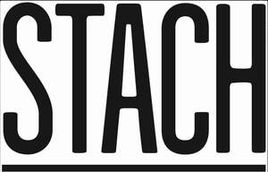

Trade Mark Journal No.2025/032 8 August 2025
UK00004241605 30 July 2025 (29,30,32,35,41,43)

International priority date claimed: 13 March 2025
(European Union Intellectual Property Office (EUIPO))
(019155950)
- Class 29
- Meat, fish, poultry and game; Meat extracts; Preserved frozen, dried and cooked fruits and vegetables; Jellies, jams, compotes; Eggs, milk and milk products; Edible oils and fats; Fruit salads; Legume salads; Vegetable soup preparations; Hummus [chickpea paste]; Low-fat potato crisps; Milk; Milk beverages, milk predominating; Milk shakes; Soups; Fruit-based snack food; Milk of almonds [beverage].
- Class 30
- Coffee, tea, cocoa and artificial coffee; Rice, tapioca, sago; Flour and preparations made from cereals, bread, pastry and confectionery, edible ices; Sugar; Honey, treacle; Yeast, baking-powder; Salt, mustard; Vinegar, sauces (condiments); Spices; Ice-cream croissants; Sandwiches; Rusks; Biscuits; Savory biscuits; Salted biscuits; Chocolate biscuits; Macaroons [pastry]; Petit-beurre biscuits; Bread; Bread rolls; Cocoa beverages with milk; Buns; Cheeseburgers [sandwiches]; Chocolate; Chocolate beverages with milk; Chocolate mousses; Edible ices; Couscous [semolina]; Crackers; Dessert mousses [confectionery]; Cocoa-based beverages; Chocolate-based beverages; Coffee-based beverages; Tea-based beverages; Stick liquorice [confectionery]; Liquorice [confectionery]; Popcorn; Farinaceous foods; Corn, roasted; Cereal bars; Oatmeal; Iced tea; Iced coffee; Caramels [candy]; Chewing gum; Gingerbread; Spring rolls; Noodle-based prepared meals; Macaroni; Noodles; Pancakes; Gruel, with a milk base, for food; Pies; Pizzas; Pralines; Puddings; Quiches; Ravioli; Ice cream; Sweetmeats [candy]; Sherbets [ices]; Spaghetti; Sushi; Cakes; Tortillas; Cereal-based snack food; Rice-based snack food; Tarts; Meat pies; Waffles; Frozen yoghurt [confectionery ices].
- Class 32
- Beer; Mineral and aerated waters and other non-alcoholic beverages; Fruit beverages and fruit juices; Syrups and other preparations for making beverages; Non-alcoholic beverages; Non-alcoholic fruit juice beverages; Non-alcoholic fruit extracts; Non-alcoholic aloe vera beverages; Aperitifs, non-alcoholic; Cider, non-alcoholic; Beer; Ginger beer; Vegetable juices [beverages]; Non-alcoholic honey-based beverages; Isotonic beverages; Aerated water; Smoothies; Juices.
- Class 35
- Advertising; Business management; Business administration; Office functions; Marketing; Promotion; Merchandising; Public relations services; Publicity and sales promotion; Retail and wholesale services; Import and export services; Administrative handling of orders and related sales orders; Office functions within the framework of drawing up and concluding franchise agreements for supermarkets and retail businesses; Provision of commercial information; Information and consultancy relating to the aforesaid services; All the aforesaid services whether or not provided via electronic channels, including the Internet.
- Class 41
- Education; Training; Entertainment services; Sporting and cultural activities; Compilation and providing of training, courses and workshops; Information and consultancy relating to the aforesaid services; Allthe aforesaid services whether or not provided via electronic channels,including the Internet.
- Class 43
- Services for providing food and drink; Providing temporary accommodation; Preparing and serving food and drink; Food and drink catering; Catering industry services; All the aforesaid services whether or not via electronic channels, including the Internet.
Stach B.V.
Representative: Sonder & Clay